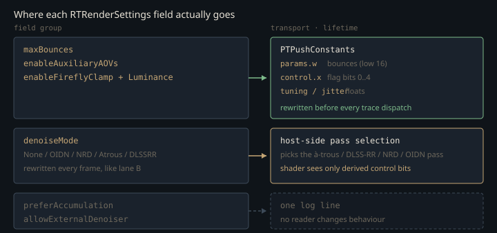

Monograph · Tree · ← Module hub · Profiles & meta
path-tracer
Profiles & meta
RTRenderSettings, Realtime vs Offline traits.
Two constants, one integrator
OHAO ships one ray-tracing renderer with two personalities. `PathTracer` has no subclass anywhere in the tree and no `#ifdef` picks a profile: the difference between the two is a pair of `constexpr` aggregates in `rt_settings.hpp`.
inline constexpr RTRenderSettings kRealtimeRTSettings{ohao/render/rt/rt_settings.hpp:27Both profiles run the same shaders, `rt/path_tracer.slang`. The realtime profile takes two bounces, a firefly clamp at luminance 10, and NRD as its denoiser: a moving view is one sample a frame, and the denoiser keeps the history.
.denoiseMode = DenoiseMode::NRD, // a moving view is one sample a frame: the denoiser keeps the historyohao/render/rt/rt_settings.hpp:35The offline profile takes 32 bounces (Russian roulette ends most paths long before), no clamp, and OIDN as its default post-process. Its constant does not merely clear the clamp flag, it also zeroes the threshold:
.fireflyClampLuminance = 0.0f,ohao/render/rt/rt_settings.hpp:45The raygen gates the clamp on *both* the flag bit and a positive threshold, and applies it once, to the whole path's radiance:
if ((flags & kFlagFireflyClamp) != 0u && pc.tuning.x > 0.0)shaders/rt/path_tracer.slang:640The host adds a third condition. The clamp trades variance for bias, which only a temporal denoiser fed one sample a frame needs; a running mean converges without it. So the flag is set only when the trace does not accumulate:
if (m_renderSettings.enableFireflyClamp && !tracerAccumulates(m_renderSettings))ohao/render/rt/path_tracer_render.cpp:504Under the realtime profile with any denoiser but NRD, à-trous or DLSS-RR, the clamp is therefore off, and a realtime view with no denoiser converges to the same image the offline profile does at the same bounce count.
The denoise policy is a handful of functions
`rt_meta.hpp` holds what each denoiser asks of the trace, as plain `constexpr` functions of the mode or of the settings: CPU readback (OIDN), motion vectors (NRD, à-trous, DLSS-RR), the diffuse/specular split (NRD), sub-pixel jitter (NRD, DLSS-RR), and realtime capability (everything but OIDN). Beside them sit the RT techniques' concepts, which document the shadow and GI techniques' virtual surfaces.
[[nodiscard]] constexpr bool denoiseNeedsPixelJitter(DenoiseMode m) noexcept {ohao/render/rt/rt_meta.hpp:29Two functions decide what the trace keeps. `tracerAccumulates` says whether the trace keeps its own running mean of the beauty. A temporal denoiser carries the history itself, through camera moves by the motion vectors, and takes this frame's sample alone; offline NRD denoises the mean of a still view's samples.
case DenoiseMode::NRD: return !isRealtimeProfile(s.profile);ohao/render/rt/rt_meta.hpp:40`tracerAccumulatesAOVs` says whether NRD's five inputs are themselves running means, which is the offline NRD case only. Both are read by the per-frame path, which turns them into the `control.y` length of the running mean and an AOV-accumulation flag.
if (tracerAccumulatesAOVs(m_renderSettings)) pc.control.x |= kPTFlagAccumulateAOVs;ohao/render/rt/path_tracer_render.cpp:506`applyDenoisePolicy` runs inside `PathTracer::setRenderSettings` and is allowed to override the profile: motion vectors or a diffuse/specular split force auxiliary AOVs on, and CPU readback raises `allowExternalDenoiser`.
m_renderSettings = applyDenoisePolicy(settings);ohao/render/rt/path_tracer.cpp:313In practice it is a no-op on every shipping path. Both profile constants already set `enableAuxiliaryAOVs = true`, and every settings object that reaches `PathTracer` descends from one of the two, so the AOV branch cannot fire; the other branch writes `allowExternalDenoiser`, which nothing reads. `denoiseIsRealtimeCapable` is exercised only by the engine test suite: nothing in the engine refuses to run OIDN interactively, the CPU readback simply makes it slow.
One transport, and the mode that takes none

Everything per frame that reaches the shader travels in the 256-byte push-constant block: the bounce limit in `params.w`, the clamp threshold in `tuning.x`, the flags in `control.x`, and the two clock answers in `control.y` and `control.z`. That ceiling is a compile-time constant asserted against the struct, not a device limit read back from `VkPhysicalDeviceLimits`. Vulkan guarantees 128 bytes; 256 is a bet on RT-class hardware that the code makes and never checks.
inline constexpr std::size_t kPTPushConstantsBytes = 256;ohao/gpu/layout_meta.hpp:24`denoiseMode` takes neither a push constant nor a pipeline state of its own. It selects host-side work — which of the à-trous, DLSS-RR, NRD or OIDN passes runs around the trace — and reaches the shader only as derived values: the AOV-accumulation and DLSS-RR flag bits, the length of the running mean, and whether the clamp is on.
if (m_renderSettings.denoiseMode == DenoiseMode::Atrous && m_atrousDenoiser) {ohao/render/rt/path_tracer_render.cpp:536The pipeline itself carries no profile state: no specialization constant is attached to any stage, so `createRTPipeline` running before the profile's settings arrive (they are pushed after `init`) costs nothing.
m_pathTracer.setShaderSet(m_shaderSet);ohao/render/rt/rt_profile_renderer.hpp:93A profile is an object
`RTRealtimeRenderer` and `RTOfflineRenderer` are thin finals over a shared base that wraps a `PathTracer` and forwards over forty accessors. Both pass `PathTracerShaderSet`'s default to that base, the four named entry points of `rt/path_tracer.slang`:
: RTProfileRendererBase(kRealtimeRTSettings, PathTracerShaderSet{}) {} // rt/path_tracer.slangohao/render/rt/rt_profile_renderer.hpp:182const char* closestHitEntry{"closestHit"};ohao/render/rt/path_tracer.hpp:69The pipeline takes each stage's entry name from the set:
stages[0].pName = m_shaderSet.raygenEntry;ohao/render/rt/path_tracer_pipeline.cpp:71The base leaves four pure virtuals to the finals: `getName`, `getProfile`, `getDefaultSettings` and `resetsAccumulationOnViewChange`. The first three return identity and constants, and `IRTRendererProfile::getDefaultSettings` has no callers. The settings aggregate is not virtual: it is handed up through the base constructor.
RTProfileRendererBase(RTRenderSettings settings, PathTracerShaderSet shaderSet)ohao/render/rt/rt_profile_renderer.hpp:84Only the fourth virtual changes behaviour, and what it decides is what a camera move means.
if (resetsAccumulationOnViewChange()) {ohao/render/rt/rt_profile_renderer.hpp:160Offline answers yes and hard-resets: sample index back to the render seed, both clocks to zero, NRD's previous matrices to identity. Realtime answers no:
bool resetsAccumulationOnViewChange() const override { return false; }ohao/render/rt/rt_profile_renderer.hpp:187and instead raises a per-frame flag. The next frame restarts the trace's running mean and keeps the denoisers' history, which reprojects through the motion vectors; the motion vectors are valid because last frame's view-projection is a rendered frame's.
pc.control.z = m_hasPreviousView ? 1u : 0u;ohao/render/rt/path_tracer_render.cpp:511Keeping the denoiser's history alive across a camera move is what makes an interactive viewport usable; throwing everything away is what makes a reference render correct.
A change to the traced scene takes the same path. After `recordUpdates`, a frame whose TLAS was built or refit, or that uploaded instance data or lights, calls `notifyViewChanged` on the active profile, so an offline render restarts on a moved instance and a still scene keeps accumulating:
rtRenderer->notifyViewChanged();ohao/gpu/vulkan/render_dispatch.cpp:355What the per-frame reset keeps
`VulkanRenderer` maps a render mode to its profile's constant with one static function, and a null answer means the mode is not path traced:
const RTRenderSettings* VulkanRenderer::rtDefaults(RenderMode mode) {ohao/gpu/vulkan/renderer.cpp:475Per frame, `prepareRTSceneForFrame` overwrites the renderer's settings with those defaults before doing anything else, and `renderRTPipeline` calls it before it records the trace:
m_rtSettings = defaults;ohao/gpu/vulkan/renderer.cpp:461`applyRTRenderSettings` then re-injects the two overrides a caller can hold: a `--denoise` mode, whatever it is (None and OIDN included), and a bounce limit (`--bounces`, `render.capture {bounces}`).
if (m_maxBouncesOverride) m_rtSettings.maxBounces = *m_maxBouncesOverride;ohao/gpu/vulkan/renderer.cpp:444Anything else set through `setRTRenderSettings` lasts until the next RT frame: it is overwritten before any raygen reads it.
The profile constants are authoritative every frame, not just at startup. A knob that is not one of the two overrides is not a setting; it is a value discarded before the next dispatch reads it.
Contracts
- Both profile renderers are created lazily by `ensureRTRenderer` and released only in `VulkanRenderer::shutdown`. Switching modes at runtime leaves two full `PathTracer` instances resident, each owning its own screen-sized storage images (several of them RGBA32F), and `forEachRTRenderer` applies resizes and render seeds to both. Scene data is not duplicated: both read the one `RenderScene` and the one bindless table.
- `setRenderSettings` must be called between frames, never inside a command buffer: a change of DLSS render scale makes it wait on device idle and reallocate every render target.
- `preferAccumulation` and `allowExternalDenoiser` exist in the struct, but no code reads them to change behaviour — they appear only in the profile log line. Do not add logic that assumes they are already honoured. {{cite ohao/gpu/vulkan/renderer.cpp "externalDenoiser="}}
- The offline profile's freedom from firefly clamping holds three ways (flag clear, threshold zero, and a trace that accumulates). Restoring a nonzero threshold and the flag on the offline constant would still clamp nothing while it accumulates, and would clamp the moment a temporal denoiser is chosen.
- `tracerAccumulates` and the denoisers' history are coupled: a mode that returns false must carry its own temporal history (or show raw one-sample frames), because the trace keeps none.
Source files
ohao/render/rt/rt_settings.hppshaders/rt/path_tracer.slangohao/render/rt/path_tracer_render.cppohao/render/rt/rt_meta.hppohao/render/rt/path_tracer.cppohao/gpu/layout_meta.hppohao/render/rt/rt_profile_renderer.hppohao/render/rt/path_tracer.hppohao/render/rt/path_tracer_pipeline.cppohao/gpu/vulkan/render_dispatch.cppohao/gpu/vulkan/renderer.cppParent hub for the full pipeline narrative; this page is the file-level design unit. Sitemap · hover glossary terms anywhere.